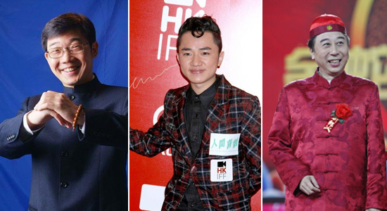

春節有眼福！送1年中文電視，各台精彩春晚免費看
（弗吉尼亞維也納02月11日）
從某一年開始，"春晚"這個由央視創造的品牌不再僅屬央視，而是各衛視搶奪收視份額，打響品牌口碑的重要戰場。前腳剛在跨年演唱會結束一輪交手的各大衛視，還未趕得及歇一口氣，就又投入了新的戰役。和跨年夜比拼星光的招數不同，各大衛視"春晚"更看重"內功"比拼，堅持抓大放小戰略，"集星"但求質高不求量多，而且更重笑星的級數和語言類節目的質量。已宣布告別小品舞台的小品王趙本山和終於"食言"上了央視春晚的郭德綱，都是各大衛視眼中的香餑餑。就連他們的弟子們都被迅速哄搶而盡。
iTalk為讓更多海外華人盡享"年味"，盡觀精彩春節檔節目，特向所有新老iTalkBB電話用戶送出1年高清中文電視服務。 30+頻道實時直播+72小時回看，海量免費點播，僅需支付$40開通費，再無任何費用，無合約，無月費，無設備押金。如果您不是iTalkBB電話用戶，每月僅需$4.99起，便可直撥美加中港台等全球各地，加上電視僅有的開通費用，每月$10便可搞定電話電視。趕快看看下面的精彩晚會內容有沒有戳中您的心，趕緊領取屬???您的一年免費中文電視。 30天試用退款保證，無憂訂退讓您無憂觀賞春節精彩春節節目。
江蘇衛視春晚：F4合體，"白娘子"重聚，笑星陣容年度最強
江蘇衛視為了迎合過年的歡樂氣氛，把重拳打在語言類節目上，占節目總量的40%，而到場的"笑星"陣容堪稱年度最強，包括趙本山、郭德綱、小瀋陽、沉春陽、程野、宋小寶、開心麻花等。包袱緊跟時事熱點，大膽吐槽"房姐"、"霧霾"，看得觀眾樂不可支。
此外，"重聚"也是江蘇衛視春晚的一大看點。由趙雅芝、葉童、陳美琪組成的"正版《新白娘子》組合"也將在20年後再聚首，重唱《千年等一回》、《渡情》等經典歌曲。而已"單飛"多年且有不合傳聞的F 4也"合體"了，演唱了經典的《流星雨》 、《第一時間》等曲目。
安徽衛視春晚：月光女神來了
安徽衛視今年春晚依舊主打"徽晚"品牌，在主持、歌唱、小品各環節都聚集了不少大牌明星。在國際范上，可以和央視春晚的席琳?迪翁比拼的就是莎拉?布萊曼了，她首次來到安徽衛視的春晚舞台獻歌。據說，為了保證演出順利，安徽衛視還為莎拉?布萊曼購置一份價值千萬元的保險。此外，在港台陣容上，安徽衛視也走《建國大業》 的數星星范兒。費玉清和張菲兄弟同台飈歌，搖滾教父崔健和趙傳、齊秦，三位老男人一起火熱搖滾。劉謙帶來魔術表演，韓國少女天團tara的內地首秀，情歌王子林俊傑、胡夏深情獻唱……
東方衛視春晚：鳥叔PSY將教林志玲跳騎馬舞
東方衛視春晚推出"頂級春晚"的概念。總導演侯捷介紹，今年東方衛視春晚共邀請了60餘位明星，其中有98%都是從未出現在東方衛視春晚的新面孔。而最有賣點、最為重磅的明星就是在去年火透全球的鳥叔了。鳥叔和嘉賓主持林志玲、黃渤互動，教穿超短裙的林志玲跳騎馬舞，其間有怎樣的化學反應，還請看官們自己端詳，小編嚴格遵守不劇透的好習慣。
廣東衛視春晚：南北笑星對陣，王祖藍PK馮鞏、大兵
廣東電視台已第三次打造"南派春晚"，今年，其宣稱要用粵味王牌節目加全明星陣容抗衡蛇年央視春晚。廣東電視台邀請到有多位巨星加盟，T WIN S、王祖藍、陳慧嫻、夏雨、薛家燕、盧海鵬、苑瓊丹、麥嘉等聯袂，齊秦、任賢齊、邰正宵、辛曉琪、馮鞏、大兵等逐一粉墨登場。其中最大的看點在於南北笑星PK賀歲。馮鞏將攜小品《酸辣婚禮》現身粵式婚慶現場，節目特意植入不少南方幽默元素，新奇有趣。
湖南衛視春晚：劉歡捧場助陣，龔琳娜夫婦演《金箍棒》
湖南衛視今年將焦點聚集在創意和混搭上。如歌壇大姐大毛阿敏，混搭"綿羊音"曾軼可；王祖藍搭檔賈玲，表演逆天模仿秀。之前因為一首《法海你不懂愛》再續"神曲傳說"的龔琳娜，這次將和洋老公同演《金箍棒》，扮完了"白素貞"，又開始挑戰"孫悟空"。龔琳娜稱新歌的難度係數將大大超越《忐忑》。而崔健和黃貫中南北兩大搖滾歌手，也將同場"對決"。此外，芒果台還請到了頂級大咖助陣——— 流行樂壇的領軍人物劉歡。
湖北衛視春晚：范爺做年夜飯，成龍唱紅歌
湖北衛視春晚雖然驚喜不多，但勝在每個明星都有股凜然正氣，春晚正能量不斷。像范冰走"慈善"路線，唱歌之外，還與一群特殊的小朋友互動製作"年夜飯"；成龍不忘唱"紅歌"，一曲《國家》盡顯大哥憂國憂民風範；房祖名擔任喜慶大使獻上一曲極為應景的拜年歌《恭喜恭喜》。
iTalkTV擁有30+精選正版頻道實時直播+72小時回看，海量電視劇、電影、綜藝節目點播。無論是父母排遣寂寞，孩子學習中文，還是您享受華語娛樂都必不可少的產品。春節特惠就快結束，還不快訂購iTalkTV，開始新一年的精彩？
更多詳情，請登入www.iTalkBB.com 或撥打24小時服務熱線1-877-482-5522查詢。
關於iTalkBB：
iTalkBB新電信是享譽全美的優秀通訊品牌，是國際電訊行業的領導和先驅。其以頂級全球網路和前沿技術為依託，以最具競爭力的價格為客戶提供高質、清晰的本地、國內及國際長途電話服務，以及高清中文電視直播、回播與點播服務。其電話業務能完全取代傳統家庭電話，並享受多重免費提供的附加功能如來電等待、三方通話、來電顯、來電轉接等。另有獨一無二的功能-中國大陸、台灣、香港、南韓當地號碼，當地親友只要撥打此號碼，就能接通到在美國的親友，而無需支付國際長途費用。 iTalkBB的高清中文電視服務，自問世以來便受到了廣泛的好評和歡迎。超過五十個熱門頻道支持實時直播與48小時回看，海量最新電影電視劇綜藝節目免費無限點播，讓用戶以最低價格盡享華語娛樂。 iTalkBB新電信將不斷努力，與您共同成就更美好的生活。 iTalkBB設有24小時中英文的客戶服務熱線??1-877-482-5522和官方網站www.iTalkBB.com，一年365天提供不間斷的服務與更多信息的查詢。